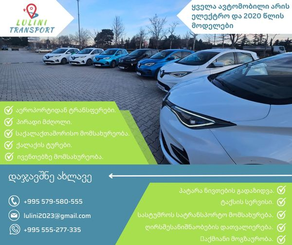

lulini is-A company that offers cars with a drivers,With full insurance package and drivers with experience.
🚗 Introducing our new services! 🌟
1. Airport transfer.
2. Private driver.
3. Travel between cities.
4. City tour.
5. Event transportation.
6. Small items delivered.
7. Taxi service.
8. Hotel shuttle.
9. City sightseeing.
10. Business travel.

Experience the convenience and comfort of our 2020 electric cars! Book now to enjoy a seamless and eco-friendly journey with us. Our friendly drivers are ready to make your travel experience unforgettable. Don't miss out on the opportunity to travel in style and sustainability. Book your ride today! 😍😎
🚐🌟 Need extra space for your adventures? Lulini Transport has you covered! Rent one of our comfortable minivans with drivers and without drivers, for just $80 a day and hit the road with ease. More room, more memories—book your ride today! 🛣️✨